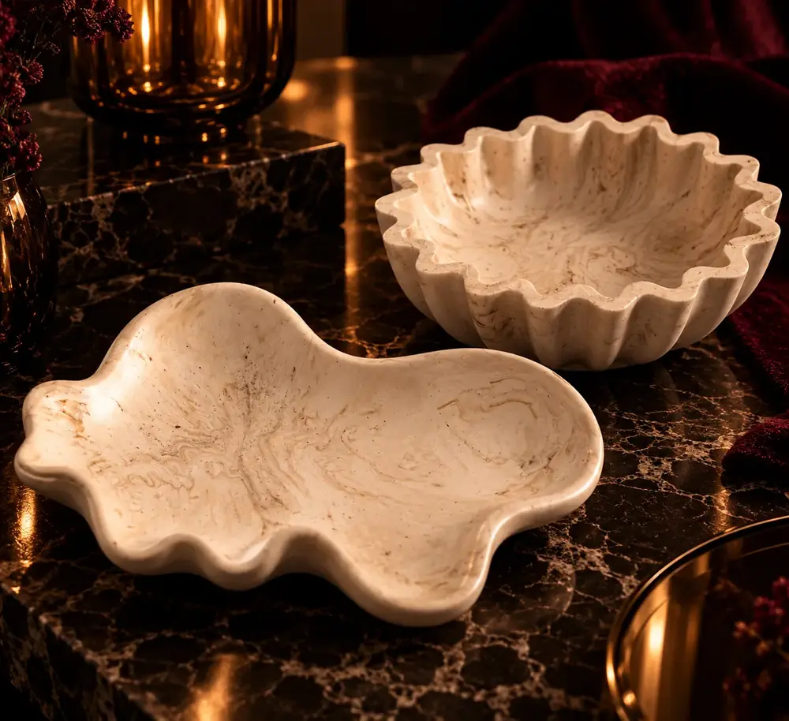
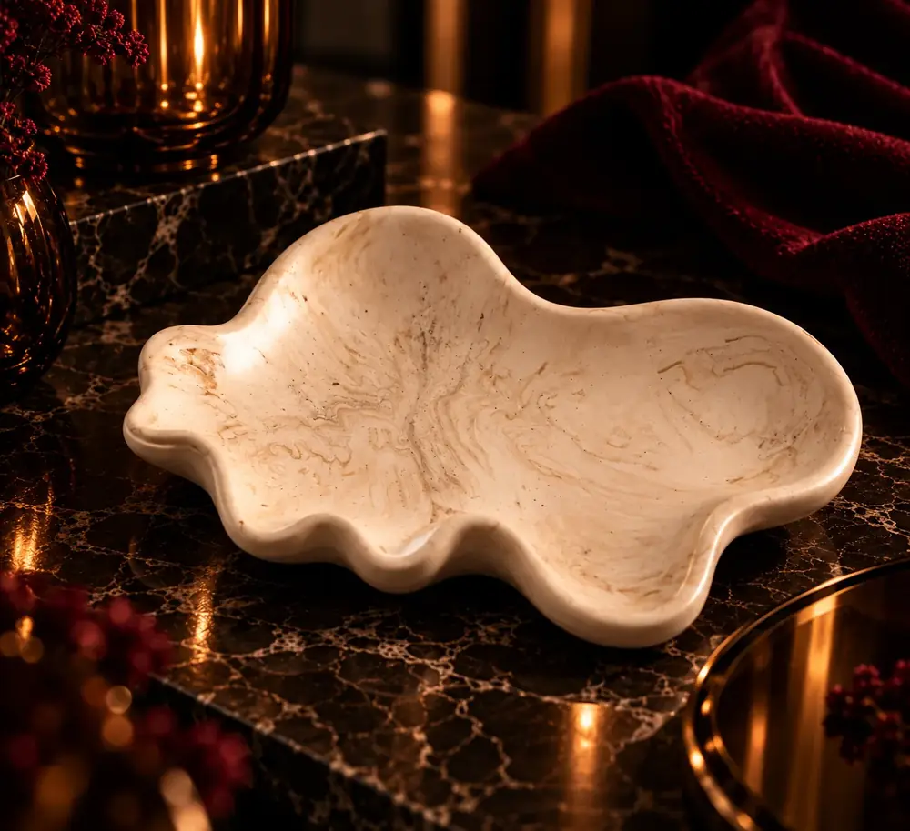
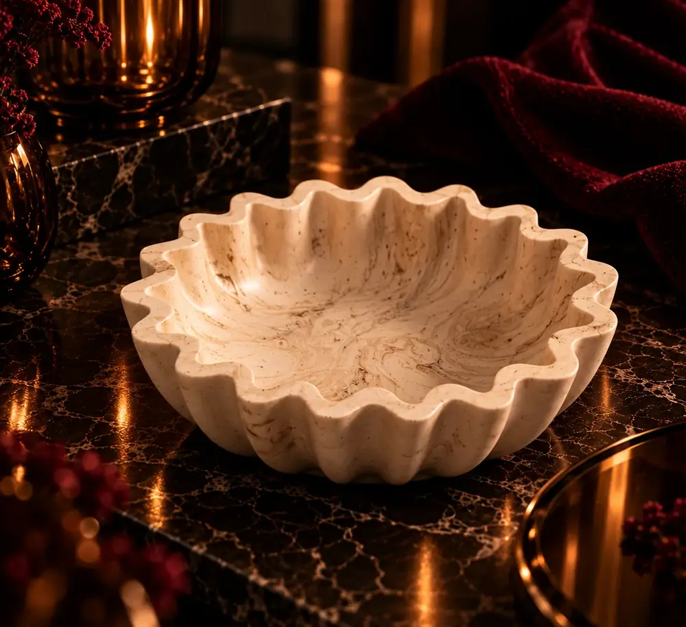

Casa · Corpo · Cabeça · Presença
Há coisas que se sentem
antes de se explicarem.
Escolhe pelo que queres sentir agora.
Produtos digitais
Também há coisas que não chegam numa caixa.
Jogo digitalPÁRA DE IGNORAR!
28 perguntas. Duas pessoas. O que ainda não perguntaste.
Ver o jogo → Produto digitalOráculo MAISON JF®Pensa na pergunta. Escolhe o território. Abre outra perspectiva.
Abrir o Oráculo → Biblioteca · ebooksPara ler e voltar.Histórias e livros para quando não queres uma resposta rápida.
Entrar na Biblioteca →Curadoria Maison
Coisas que pertencem ao nosso universo.
Peças, matérias e pequenos objetos escolhidos pela Maison. Algumas existem em poucas unidades. Outras nascem apenas por encomenda.



A começar pela Jesmonite. Depois, cristais, pulseiras e outras peças que fizerem sentido aqui — sem as transformar em produtos de fabrico Maison.